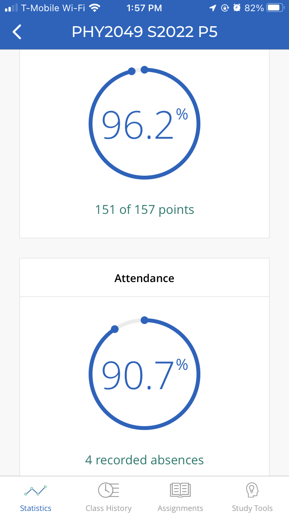

In my Mobile App discussion assignments, I focused on the attendance/learning app iClicker, which is commonly used in the UF Physics department.
In this first image above, which is the home screen after opening the app, you can see all the classes you are enrolled in and your grades in each.
When signing into class, you would click the banner for whichever class you are currently in, and you will be greeted with the screen below.

Next, you will see this screen which contains your current grade in the class, which is determined by firstly problems you answer in general and secondly by the percent of those problems you get correct.
I think this was a good system because it encouraged people to go to class and try, even if they might get the answer wrong. A wrong answer was rewarded far more than no answer at all,
which I strongly agree with.
Mobile apps should be integrated into classrooms through tools such as the iClicker app, which make save time from things such as taking attendance and gauging student retention without manually
doing these tasks. This allows the professor to spend more time teaching, which makes the classroom more efficient. One could argue that mobile apps are a source of distraction but when
used in a setting like college where your learning is up to you, it can be a quick tool to keep students engaged and for professors to ensure their material is being absorbed.
As classrooms continue to integrate technology, I foresee mobile apps to grow in popularity, especially for independent learning and review sessions where mobile apps for studying can
be even more helpful than physical flashcards!